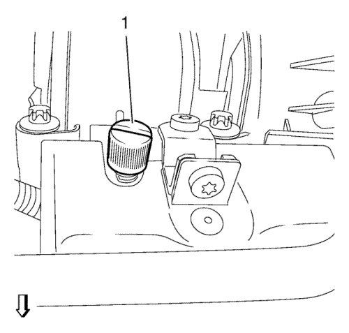

- Abra el capó.
- Desconecte el cable negativo de la batería. Consulte Desconexión y conexión del cable negativo de la batería → sin sistema de arranque/parada.
- Desmontar la pantalla de protección del motor.
- Elevar el vehículo y soportarlo de manera segura. Consultar Elevación y soporte en alto del vehículo .
- Desenganche el tubo flexible de salida del calefactor del clip de retención (1).
- Desenganche el mazo de cables del módulo de control del motor de 2 clips de retención (2).
- Bajar el vehículo.
- Retire el tubo flexible de salida de aire del enfriador de aire de carga del cuerpo de la mariposa. Consultar Sustitución del tubo flexible de salida de aire del intercooler .
- Desconecte el enchufe del mazo de cables del cuerpo de la mariposa (1).
- Desconecte el enchufe (3) del mazo de cables de la válvula solenoide de purga del depósito antiimpurezas de emisión de vapores.
Nota: Anote la posición de montaje de los enchufes del mazo de cables del sensor de presión absoluta para asegurar que se vuelvan a conectar en su posición original.
- Desconecte los 2 enchufes (1) y (2) del mazo de cables del sensor de presión absoluta del colector.
- Desconecte los 4 enchufes del mazo de cables de los inyectores de combustible (4).
- Suelte el mazo de cables del módulo de control del motor de la tapa del árbol de levas.
- Desconecte el enchufe (3) del mazo de cables de la válvula solenoide de la válvula de descarga del turbocompresor.
- Desenganche el mazo de cables del módulo de control del motor de 2 clips de soporte del colector de admisión (2) y de 2 clips de soporte (1) del tubo de distribución de la inyección de combustible.

Advertencia: La gasolina o los vapores de gasolina son muy inflamables. Puede producirse un incendio si existe una fuente de chispa. Nunca vacíe o almacene gasolina o combustible diesel en un recipiente abierto debido al riesgo de explosión o incendio. Disponga de un extintor de incendios químico seco (clase B) en las proximidades.
- Retire la caperuza 1 del tubo de inyección de combustible.

- Despresurice el combustible. Utilice el manómetro EN-34730-91 (1).

- Desmonte el tubo de alimentación de combustible (4) del conducto de la válvula de inyección de combustible.
- Suelte el tubo de alimentación de combustible del clip de seguridad (1).
- Desmonte el tubo de ventilación de combustible (2) de la válvula solenoide de purga del depósito antiimpurezas de emisión de vapores.
- Desenganche el tubo de ventilación de combustible del clip de retención (1).
- Cierre los aireadores con los tapones de cierre EN-6015.
- Desconecte el tubo de depresión de refuerzo del freno (3) del colector de admisión.
Nota: Los tornillos del colector de admisión se quedan en el colector de admisión.
- Retire los 6 tornillos (1) del colector de admisión.
- Desmonte el colector de admisión (1) junto con la junta del colector de admisión.
- Desmonte las piezas de montaje del colector de admisión según sea necesario. Consulte Desmontaje del colector de admisión → 1.4L LUH y LUJ.